Acerca
Productor Creativo — dirección de arte, producción audiovisual e identidad de marca.
Contacto
¿Contenido para tu marca? Escríbeme: rulos2p@gmail.com · 664 582 2788 · Instagram.
D'LU Coffee & Bakery
Freelance
Campaña pensada para capturar la esencia de la marca más allá del producto: el ritual, el detalle y la comunidad que se construye alrededor de cada taza. Se desarrolló el concepto desde cero: "La pieza que faltaba", traduciendo la identidad de D'LU en un lenguaje visual cinematográfico, con atención especial a la composición, el color y el ritmo narrativo. El proyecto incluyó desde la ideación y pre-producción hasta el rodaje y la postproducción, buscando que cada pieza se sintiera como un fragmento de una película más que como un anuncio.
Bount
Self-Directed
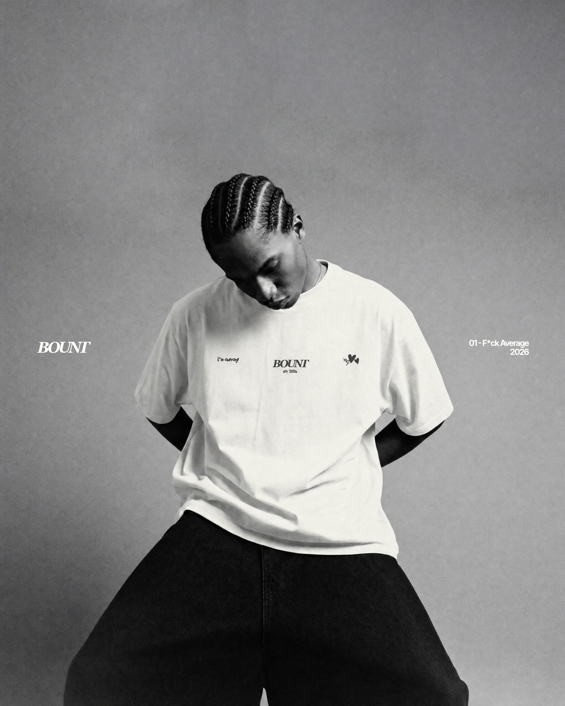
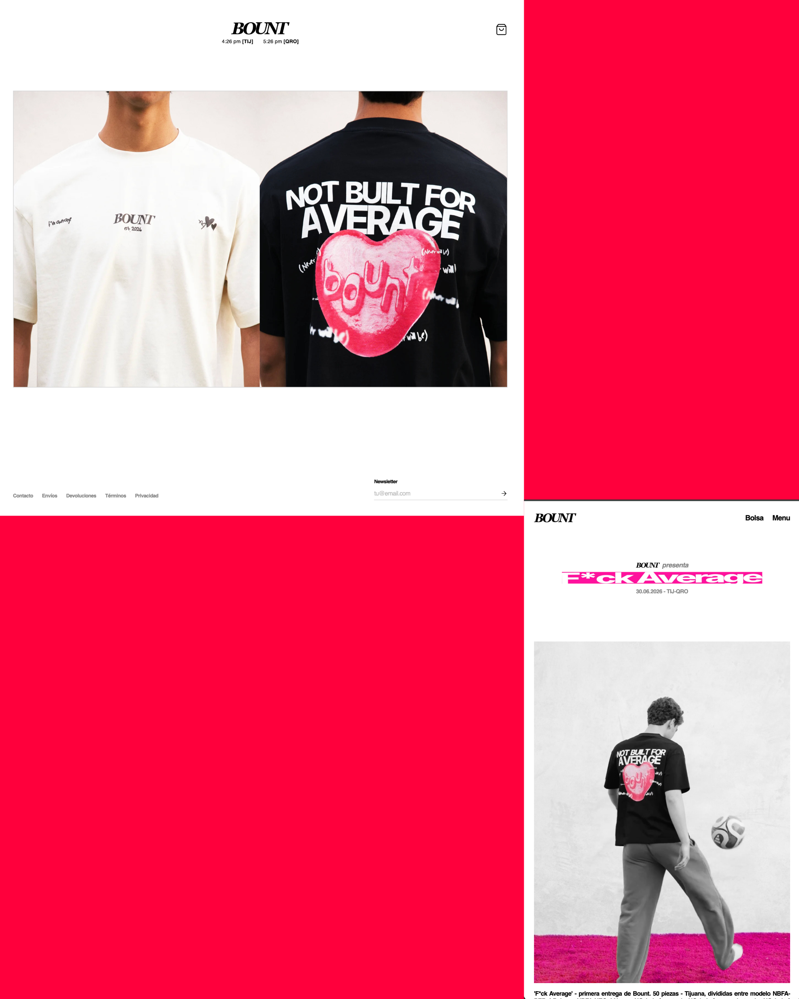

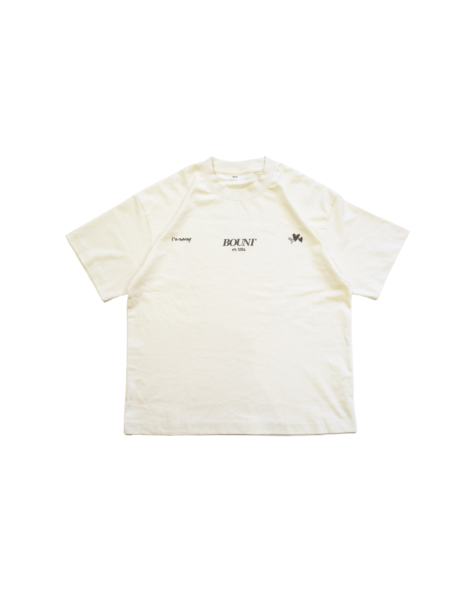
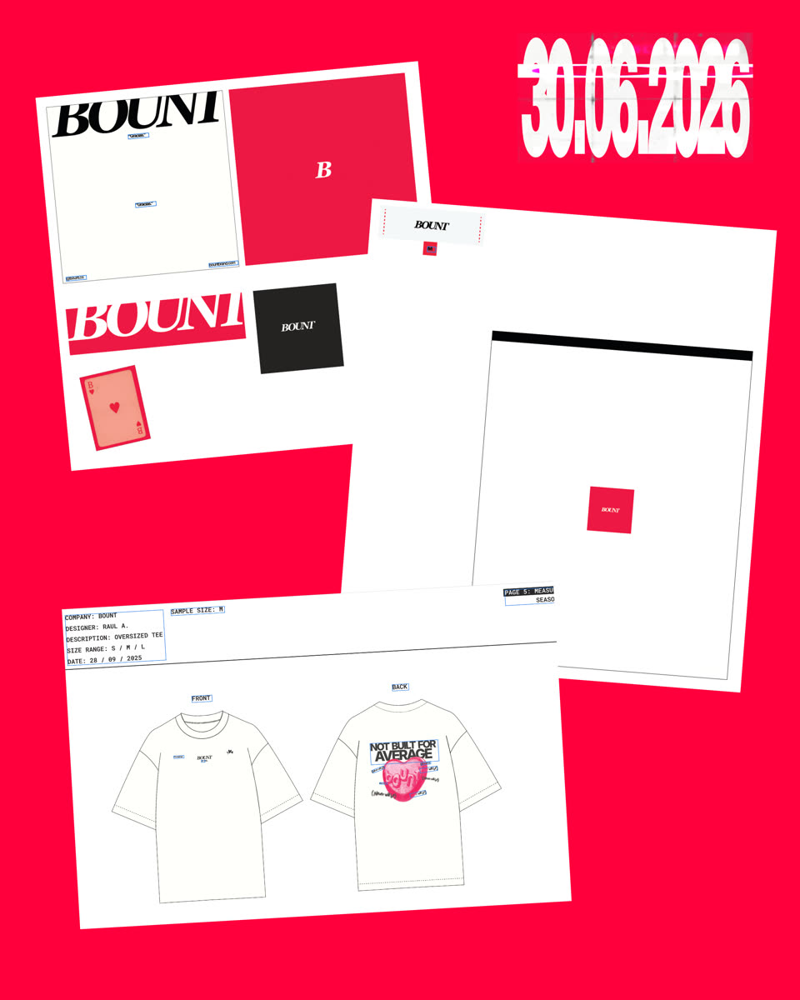
BOUNT es un proyecto de marca propia que demuestra el ciclo completo de construcción: desde la arquitectura de marca (filosofía, narrativa, posicionamiento) hasta la identidad visual (diseño, paleta, lenguaje gráfico), pasando por infraestructura digital (sitio web en Shopify con regionalizaciones) y producción audiovisual (fotografía y video de producto/lifestyle). El proyecto enfatiza la intención por encima de la ejecución técnica — cada decisión visual y narrativa responde a un propósito estratégico, no a gustos aislados. Es tanto un caso de estudio de dirección creativa como una demostración de capacidad para ejecutar en múltiples disciplinas sin perder coherencia.
Bocuze Café Bistro
Freelance
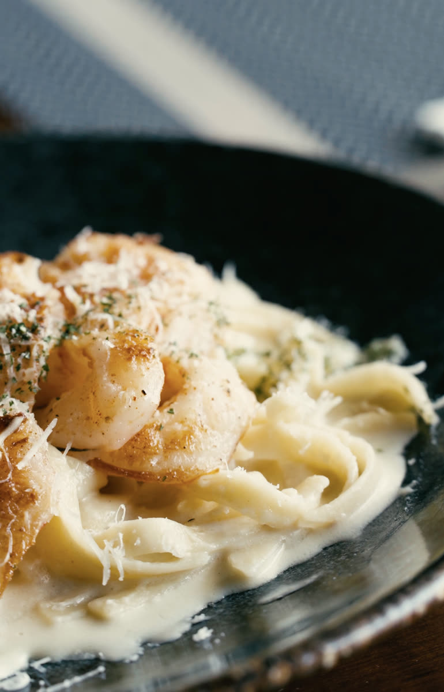
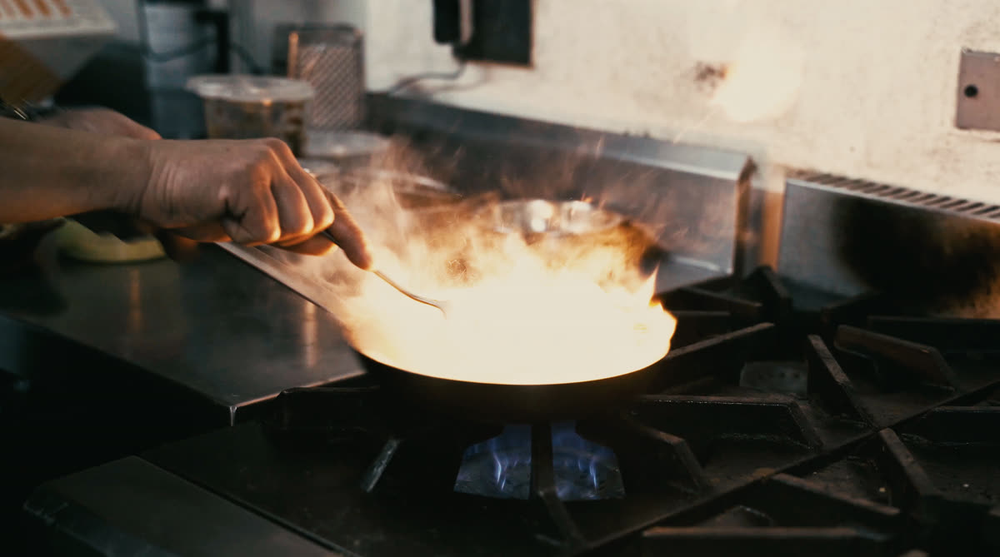
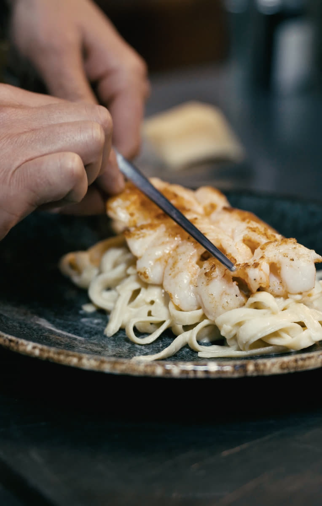
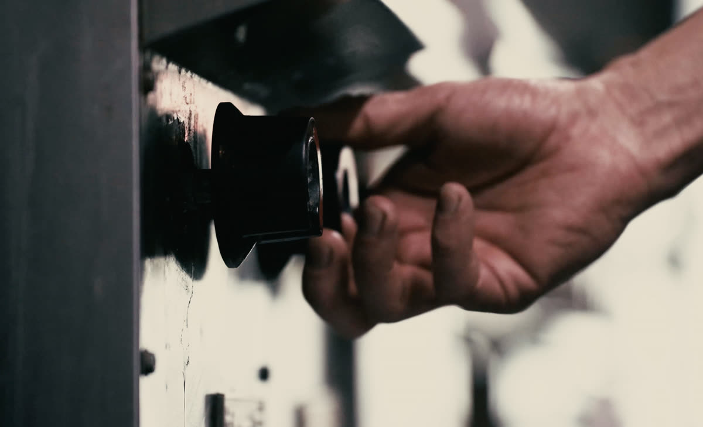
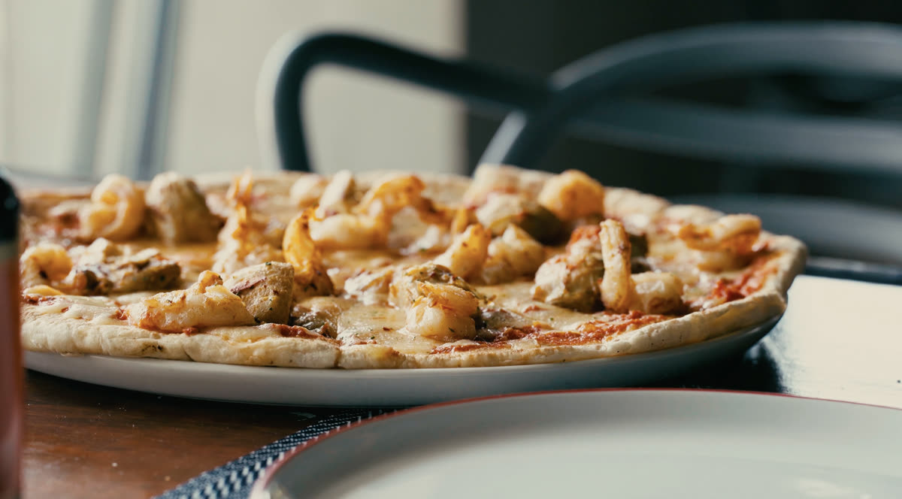
Proyecto de contenido audiovisual que diversifica formatos sin perder coherencia visual. La estrategia fue generar dos piezas complementarias: un video horizontal cinematográfico enfocado en experiencia/atmósfera, y un video vertical optimizado para redes sociales, cada uno destacando platillos diferentes elegidos por el restaurante. Demuestra capacidad para adaptar dirección visual a múltiples plataformas — manteniendo el mismo criterio estratégico, la pieza funciona tanto en cine como en el feed.
EME Café
Freelance
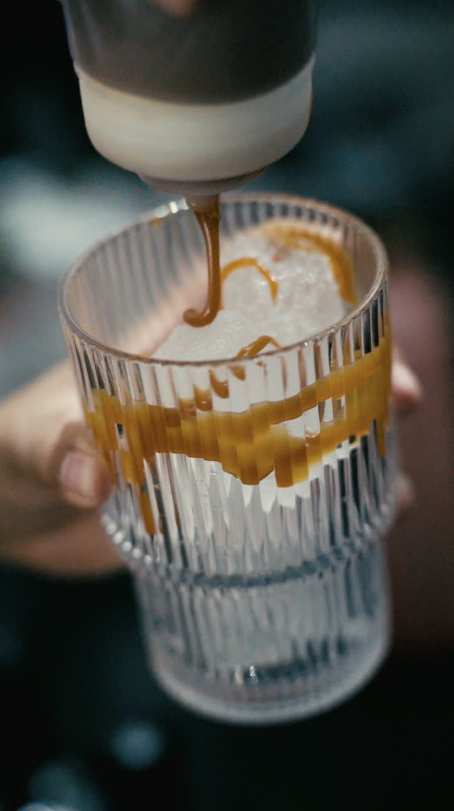
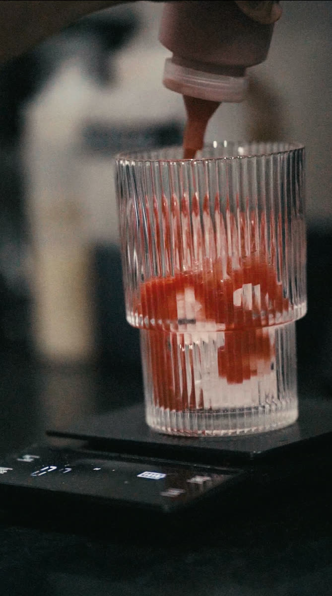
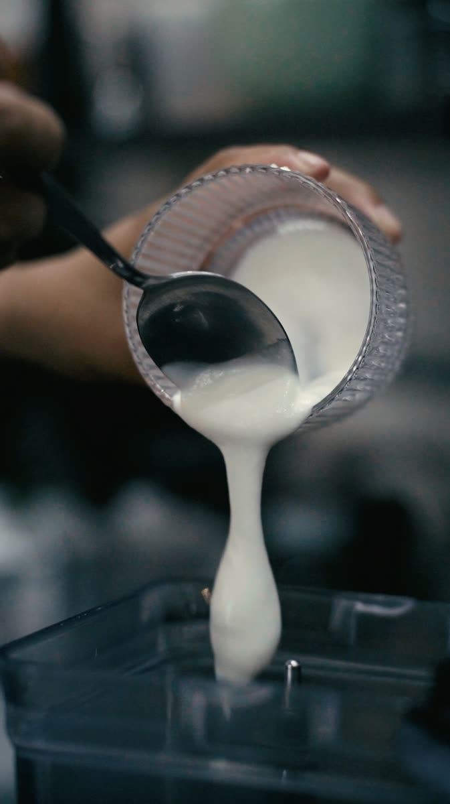
Proyecto de contenido audiovisual que traduce la atmósfera del espacio en narrativa visual coherente. La estrategia fue construir un archivo visual que va más allá del típico "content para redes": un video hero introductorio al café, seguido de 3 videos de productos seleccionados, todo anclado en la misma dirección estética. Demuestra que contenido para pequeños negocios no significa sacrificar intención estratégica — cada pieza responde a una visión unificada, generando percepción de marca más allá de la ejecución técnica.